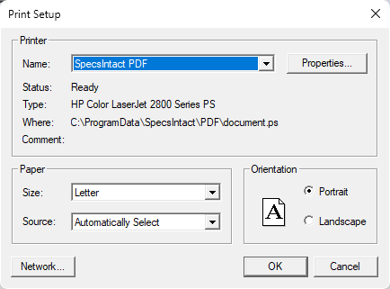

This command can only be executed from the SpecsIntact Explorer's File menu.
The Print Setup command opens the Print Setup window, which uses your Windows default settings, making it simple to choose your preferred printer, define the paper's Size, Source, and Orientation, and even access networked printers. The Properties button allows you to change options based on the selected printer, such as the number of copies to be printed and to enable duplex or color printing, etc.
 The settings you see in the printer Properties window will change depending on which printer you've selected. This is because each printer model and manufacturer offers different capabilities and configurations, so the available options will always be tailored to the specific printer you're using.
The settings you see in the printer Properties window will change depending on which printer you've selected. This is because each printer model and manufacturer offers different capabilities and configurations, so the available options will always be tailored to the specific printer you're using.
 Although the SpecsIntact PDF printer is the recommended option, you still have the flexibility to publish to PDF using the Adobe PDF printer. Before you print using the Adobe PDF printer, it's important to uncheck Rely on system fonts only; do not use document fonts option within your Adobe PDF Printer preferences, external to SpecsIntact. If you uncheck this directly in SpecsIntact (either via the File menu > Print Setup > Properties or the Process and Print/Publish > Setup > Properties), it will only stay unchecked until you close the application. To make this change permanent, refer to the 'How to Use This Feature' instructions.
Although the SpecsIntact PDF printer is the recommended option, you still have the flexibility to publish to PDF using the Adobe PDF printer. Before you print using the Adobe PDF printer, it's important to uncheck Rely on system fonts only; do not use document fonts option within your Adobe PDF Printer preferences, external to SpecsIntact. If you uncheck this directly in SpecsIntact (either via the File menu > Print Setup > Properties or the Process and Print/Publish > Setup > Properties), it will only stay unchecked until you close the application. To make this change permanent, refer to the 'How to Use This Feature' instructions.
When you launch SpecsIntact, the default printer drivers are loaded, and these can influence how content is displayed in the SI Editor's Editing window. If you ever notice text appearing to run off the page, it's a good idea to check your Windows default printer's paper size to ensure it's set to Letter.

- Printer - Provides the option to select a different printer while displaying the printer Status, Type, Where (printer driver location), and Comment (if any exists). The last selected printer becomes the application's default printer.
- Name - Displays the name of the SpecsIntact default printer.
- Properties button - Opens the Properties window that contains options that adapt to your selected printer, enabling you to precisely control everything from basic preferences to advanced configurations for your print or published materials.
- Paper - Provides control over the physical aspects of your print job by providing options to select both the Size and Source for the paper you are using.
- Size - Provides the option to select a different paper size (e.g., Letter, Legal, 11 x 17, etc.). These settings are controlled by the Windows default settings.
- Source - Provides the option to select a different paper source (e.g., Automatically Select, Manual Feed in Tray 1, Tray 1, Tray 2, etc.)
- Orientation - Provides the option to select Portrait or Landscape.
- Network button - Opens the Windows File Explorer to select the network printer you want to use, so you can browse to a network location and select additional network printers. This feature is designed to help navigate to your connected environments, allowing you to choose other printers available on your network.
Standard Windows Commands
 The OK button will execute and save the selections made.
The OK button will execute and save the selections made.
 The Cancel button will close the window without recording any selections or changes entered.
The Cancel button will close the window without recording any selections or changes entered.
How To Use This Feature
 To Change the Adobe PDF Printer Settings In Windows 11:
To Change the Adobe PDF Printer Settings In Windows 11:
- Close SpecsIntact
- In Windows, right-click on the Windows Start button, and select Settings, then perform one of the following:
- Select Bluetooth & devices, select Printers & scanners, select Adobe PDF, then select Printing preferences
- Below Recommended settings, select Printers & scanners, select Adobe PDF, then select Printing preferences
- On the Adobe PDF Printing Preferences window, uncheck Rely on system fonts only; do not use document fonts
- Click Apply and click OK
- Open SpecsIntact
To Change the Adobe PDF Printer Settings through Adobe:
- Close SpecsIntact
- Open a PDF document, select the File menu and select Print
- With the Adobe PDF printer selected, click the Properties button
- On the Adobe PDF Document Properties window, uncheck Rely on system fonts only; do not use document fonts
- Click OK
- In the Print window, click Cancel or Print
- Open SpecsIntact
Users are encouraged to visit the SpecsIntact Website's Support & Help Center for access to all of our User Tools, including Web-Based Help (containing Troubleshooting, Frequently Asked Questions (FAQs), Technical Notes, and Known Problems), eLearning Modules (video tutorials), and printable Guides.